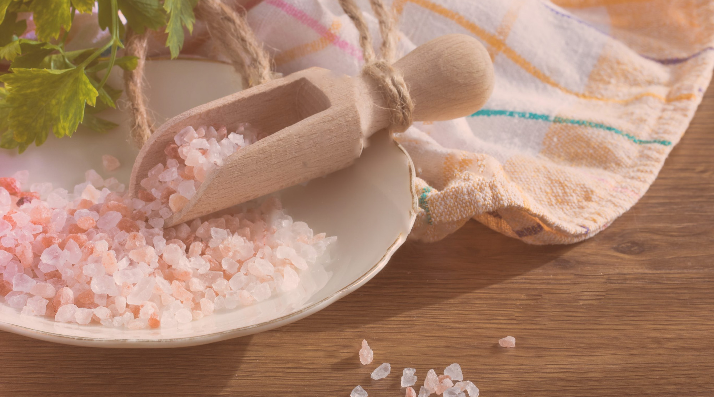

Rooted in Pakistan · Made with care
Good things, closer to their roots.
From the Salt Range to your table, we bring together thoughtful essentials with a little more care at every step.
✳Small details matter.
Because we care.
Because we care.

Purely
from here✳
from here✳
A little about us
Quality begins with where it comes from.
Glassic began with a simple idea: everyday products deserve more thoughtful sourcing and better care. We started in 2018 with glass packaging, then turned our attention to one of Pakistan’s most remarkable natural resources.
Our storyWhat we bring to the table
Goodness, in its own element.
Our promise
Care you can trace,
quality you can trust.
We believe good products begin with knowing their origins and looking after them along the way. That belief guides every choice we make.
From the Glassic journal
Stories worth sharing.
Notes on where things come from, the people behind them, and the details that make a difference.